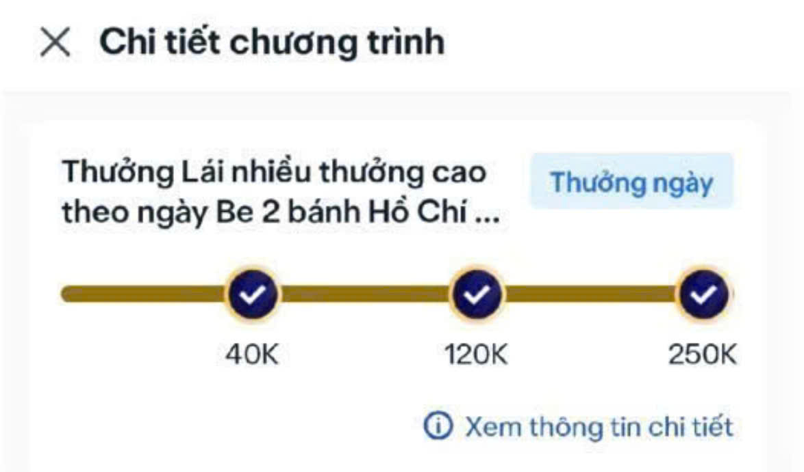
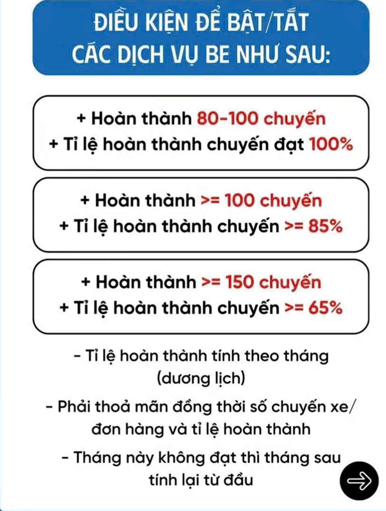
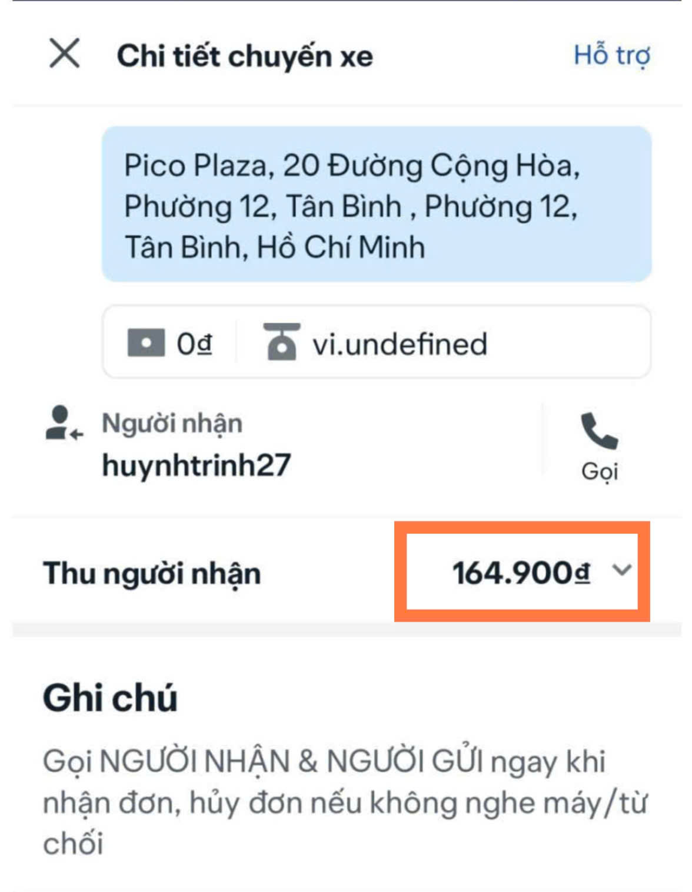
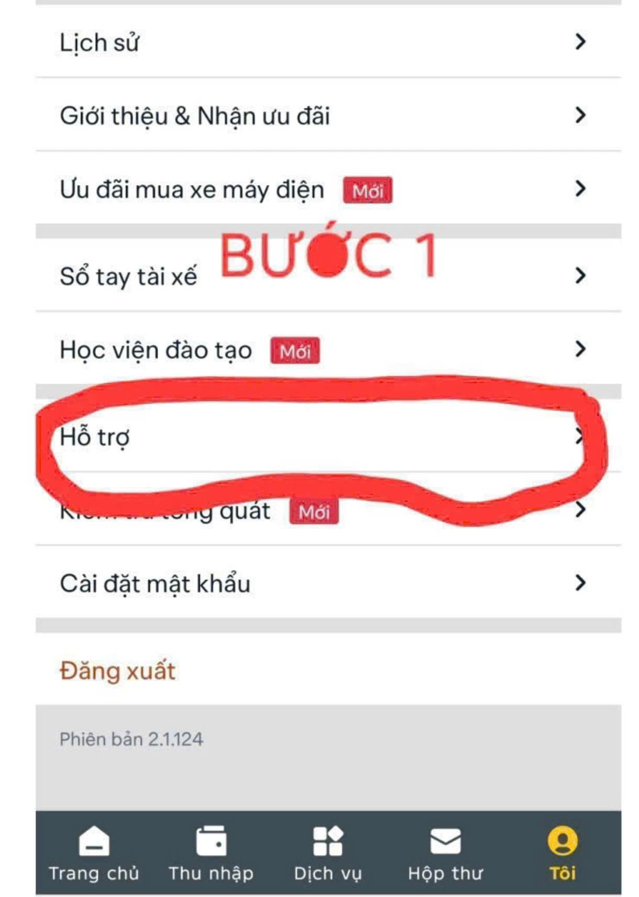
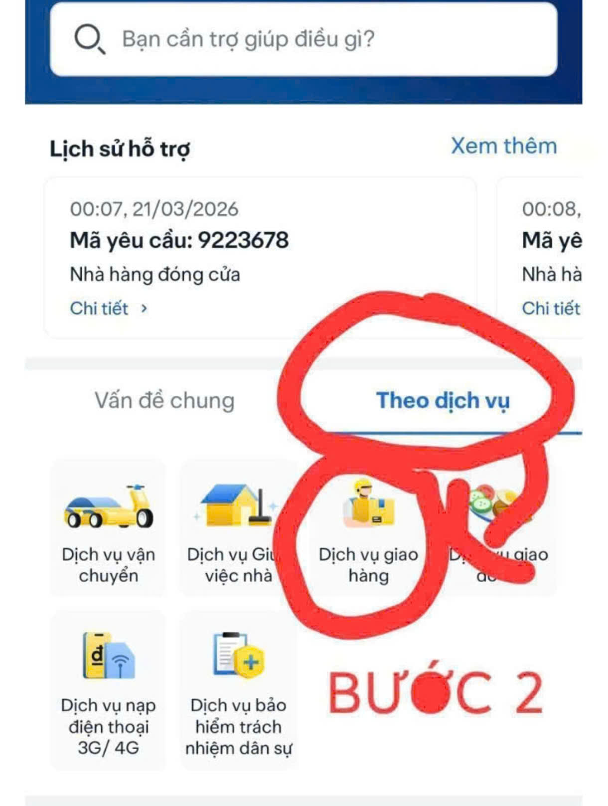
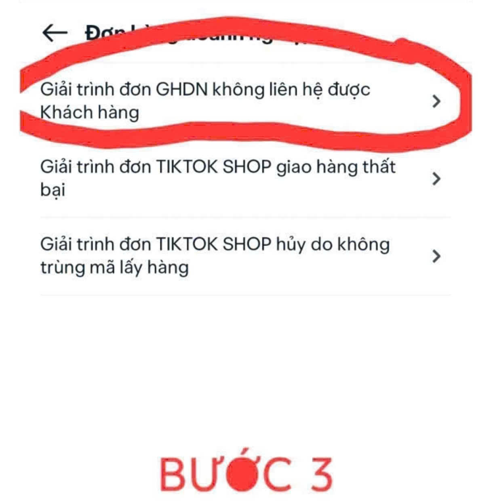
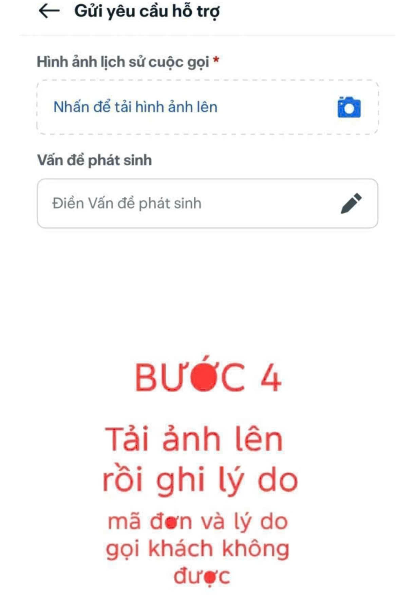

🥇 Mốc thưởng
-
Hiện tại BE có 3 mốc thưởng như hình (Mốc 3 khoảng 36-41 cuốc xe)

- App mạnh 💪(Online 9-11 tiếng & Dưới 36 cuốc & Mốc 3) => Con ruột của BE được ưu tiên.
- App ráng một chút nữa là mạnh 😂(Online 12-14 tiếng & Trên 36 cuốc & Mốc 3)
- App yếu 💀(Online 15+ tiếng & Trên 36 cuốc & Mốc 3)
🏍️ Cách cày
- Bước 1: Hoàn thành 80+ cuốc bắt buộc để được tắt/mở dịch vụ

- Bước 2: Chọn khung giờ cố định để Online (Khoảng 10 tiếng trở lên)
- ✅Hoạt động đúng giờ từ 1-3 tháng (Tốt nhất là từ 6h-15h)
- ✅Thời gian đầu có sức khỏe có thể ra sớm hơn, cày càng nhiều cuốc càng tốt (Trên 36 cuốc)
- ⛔Lựa đơn bằng cách bỏ trôi không giảm tỉ lệ
- ⛔Hủy 5 phút
- ⛔Gọi khách hủy
- Bước 3: Sau khi luyện thành công trên 36 cuốc/ngày
- ✅Giảm cuốc đi xa hoặc đi về nơi không có đơn bằng cách hủy không quá 3 cuốc xương (tỉ lệ tổng tháng phải trên 95% nếu có trôi đơn hoặc khách hủy thì tỉ lệ tổng trên app sẽ không đúng)
- ➡️Do đã giảm những đơn xương nên thời gian Online của bạn sẽ được giảm lại từng ngày thì bạn sẽ ở trong mức App mạnh như ở đầu bí kíp
- ☺️Có thể nghỉ 2-3 ngày (Không nghỉ quá 3 ngày liên tục sẽ phải cày lại)
🏗️ GHDN (Tiktok, Shopee,...)
Lưu ý:
- Các đơn này hầu hết là khách đi làm, không nghe máy, xương xẩu, ...
- Tất cả các đơn hàng GHDN phải gọi được cho người nhận mới được lấy hàng đi giao, phải hủy đơn trong 10 phút - 3 cuộc gọi
- Nếu gọi không được (vẫn đổ chuông) mà bạn vẫn muốn đi thì làm như sau:
Đối với đơn 0đ, tức là khách đã thanh toán. Bạn có thể ôm đơn, nhắn tin với khách rồi đi giao. Nếu khách chung cư hoặc công ty thì gửi bảo vệ, chụp hình lại.
Đối với đơn ứng tiền

Xác định điểm giao hàng là nhà dân mặt tiền thì OK, còn là chung cư, tòa nhà hoặc địa chỉ khó kiếm thì bạn nên thao tác như sau:
- Search Zalo và nhắn tin với khách (Nên xin khách định vị nếu khách trả lời)
- Nếu số không có Zalo thì xin shop lịch sử giao hàng của khách, nếu là khách quen thì lấy hàng đi giao
- Cảm thấy Zalo khách OK, địa chỉ dễ kiếm mà gọi khách không được, tiền ứng COD ít thì nên thử vận may đi đến nơi hỏi người nhà hoặc nhắn Zalo đưa stk chờ khách chuyển tiền.
Nếu bạn không muốn giao, hãy chụp màn hình lịch sử 3 cuộc gọi trong vòng 10 phút rồi báo cáo như sau:




⏭️ CÁCH NÉ GHDN
Ra xe giờ hành chính 8h đến 16h (Giờ hành chính BE sẽ ưu tiên GHDN cho Newbie)
Gợi ý: Ra xe từ 4h đến 8h, sau đó về ngủ rồi 16h ra chạy xe đến 21h
Nếu bạn can đảm đối đầu thì cứ chạy, nhưng nên gọi được trước khi giao. Trong vòng 10 phút, đã gọi 3 cuộc nhưng vẫn không được thì hủy như hướng dẫn phía trên.